DialogueAgents:
A Hybrid Agent-Based Speech Synthesis Framework for Multi-Party Dialogue
Abstract.
Speech synthesis is essential for advancing human-computer interaction. However, current datasets for training speech synthesis models often suffer from high construction costs, limited role diversity, and poor emotional expression. In this paper, we propose DialogueAgent, a hybrid agent-based speech synthesis framework for multi-party dialogue. DialogueAgent employs three specialized agents—Script Writer, Speech Generator, and Dialogue Critic—to collaboratively generate and refine dialogues. By iteratively adapting the script to better fit the conversation scenario through speech review and feedback, the framework enhances emotional expressiveness and paralinguistic features in synthesized speech. Using this framework, we introduce MultiTalk, a bilingual, multi-party, multi-turn speech dialogue dataset covering diverse topics. Additionally, we present two metrics tailored to dialogue-level speech evaluation to measure the emotional expressiveness and naturalness of turn-taking. Extensive experiments demonstrate the effectiveness of our framework and the high quality of the MultiTalk dataset.
This page is intended solely for the purpose of research demonstration.
Overview

Chines Samples
| Scripts | Framework Synthesis | ||
|---|---|---|---|
{
"id": "0",
"topic": "讨论家庭聚会的安排",
"conversation": [
{
"speaker": "张志强",
"text": "大家好，今天我们来聊聊下周的家庭聚会吧。我觉得应该有一个相对详细的安排。",
"prompt": "Friendly"
},
{
"speaker": "王娟",
"text": "我同意，但我们也要考虑每个人的时间安排，特别是小雪，她可能有其他计划。",
"prompt": "Thoughtful"
},
{
"speaker": "李小雪",
"text": "没错妈妈，其实...[breath]我和小美在昨天已经约好了周末去逛街。要不我们调整一下时间？",
"prompt": "Hesitant"
},
{
"speaker": "王娟",
"text": "我觉得可以，那你记得提前和小美沟通一下。",
"prompt": "Agreeing"
},
{
"speaker": "李小雪",
"text": "好的妈妈，没问题。",
"prompt": "Affirmative"
}
]
}
|
|||
| An appeal against the sentence was dismissed the following year. | |||
| I can't get a job. | |||
| She died in hospital two hours later. | |||
| We're into that build-up now. | |||
| We are not out of touch with politics. | |||
| It's not just going to be busy. | |||
| There is nothing like a fresh start.. | |||
| They will know they deserve to be there.. |
LJSpeech Samples
| Text | Ground Truth | DiffGAN-TTS | CM-TTS |
|---|---|---|---|
| America has produced a good many showy books, the typography, paper, and illustrations of which are, however, all wrong. | Still clings to a foolish, because misunderstood conventionality, deduced from what was once ornament, and is by no means useful. | But these king's witnesses were also put at times into the press yard among the capital convicts, seemingly a very dangerous proceeding. | The prison was always in "the most filthy state imaginable. | No remonstrance was attended to,. | Also to make such proposals as might appear salutary, and calculated to improve newgate and the rest of the city jails. | Confinement for twelve months in the bristol jail was counted a punishment equivalent to seven years' transportation.. |
Zero-shot on VCTK
| Text | Ground Truth | DiffGAN-TTS | CM-TTS |
|---|---|---|---|
| An appeal against the sentence was dismissed the following year.. | |||
| I can't get a job. | |||
| As, indeed, they would be. | |||
| He was good, but not that good. | |||
| The greeks used to imagine that it was a sign from the gods to foretell war or heavy rain. | |||
| It was an amazing result. | |||
| It's not even finished. |
Zero-shot on LJSpeech
| Text | Ground Truth | DiffGAN-TTS | CM-TTS |
|---|---|---|---|
| It was long before the many jurisdictions imitated the few. | |||
| That punishment must be reformatory as well as deterrent. | |||
| All these evils were set forth at length in the inspectors' first report. | |||
| That he appeared to feel deeply the force of the reverend gentleman's observations, especially when the chaplain spoke of. | |||
| The prisoner was forthwith extradited and sent back to england, which he reached with his escort on the seventeenth september the same year. | |||
| And that a new system of prison discipline should be introduced. | |||
| To safeguard business against unfair competition. | |||
| The formations, the ridge formations and characteristics, were insufficient for purposes of either effecting identification. | |||
| And abandoned because of the expense. as to the entire reconstruction of newgate, nothing had been done as yet. |
Hard Case
| Text | CM-TTS |
|---|---|
| Actress Fan Bingbing attends the screening of ’Ash Is Purest White (Jiang Hu Er Nv)’ during the 71st annual Cannes Film Festival | |
| 22222222 hello 2222222 | |
| h t t p colon slash slash teams slash sites slash T A G slash default dot aspx As always , any feedb ck , comments , | |
| config file must contain A , B , C , D , E , F , and G . | |
| int1 , int2 , int3 , int4 , int5 , int6 , int7 , int8 , int9 , | |
| K | |
| two thousand and five h t t p colon slash slash news dot com dot com slash i slash n e slash f d slash two zero zero three slash f d | |
| zero zero one , MS03 - zero twenty five , MS03 - zero thirty two , MS03 - zero thirty nine , |
VCTK Mel-spectrogram Comparison
Ground Truth.
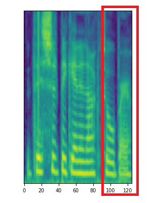
Ground Truth.
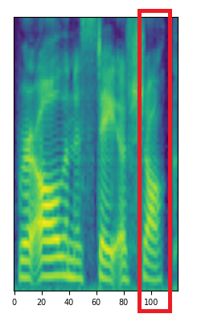
Ground Truth.
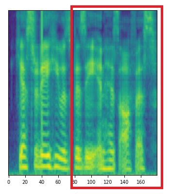
DiffGAN-TTS.
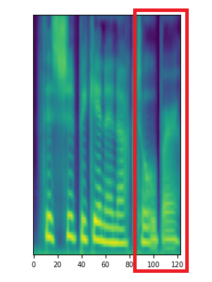
DiffGAN-TTS.
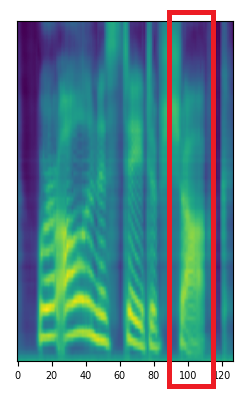
CM-TTS.
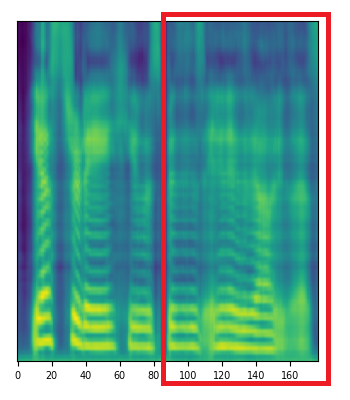
CM-TTS.
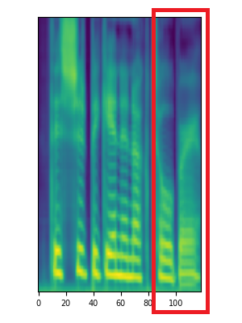
CM-TTS.
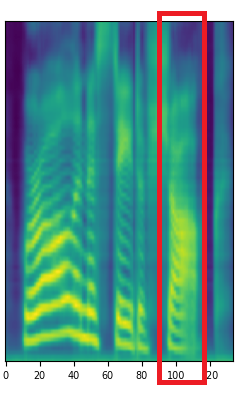
CM-TTS.

LJSpeech Mel-spectrogram Comparison
Ground Truth.
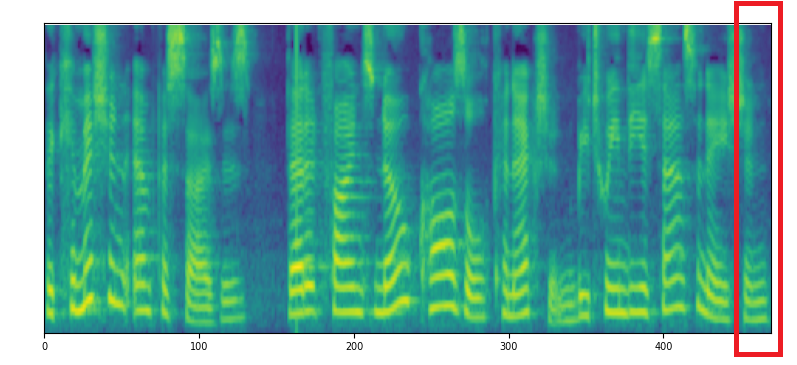
DiffGAN-TTS.
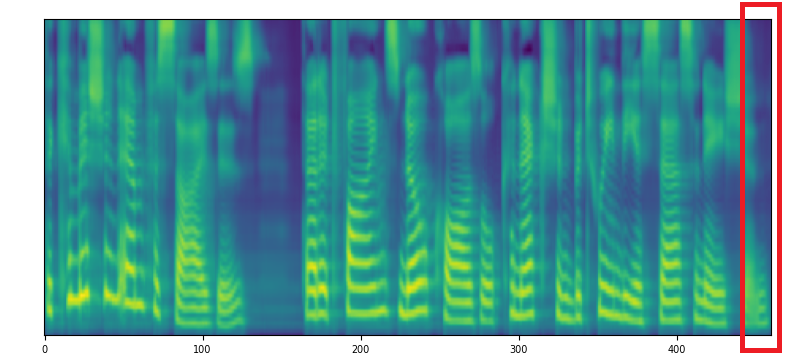
CM-TTS.
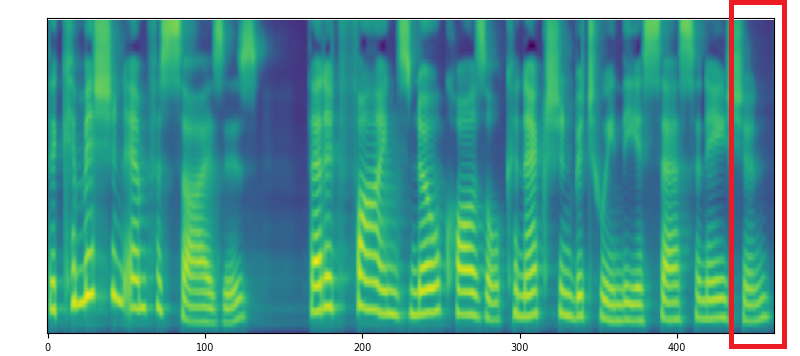
Ground Truth.
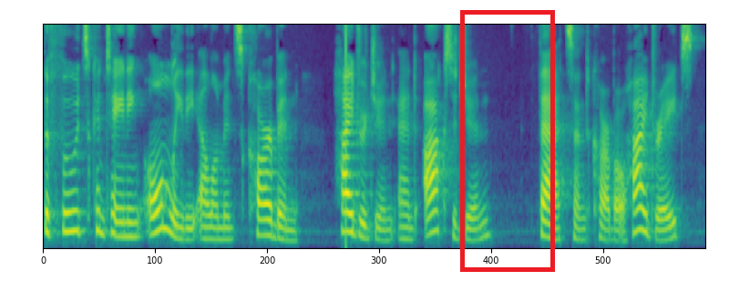
DiffGAN-TTS.
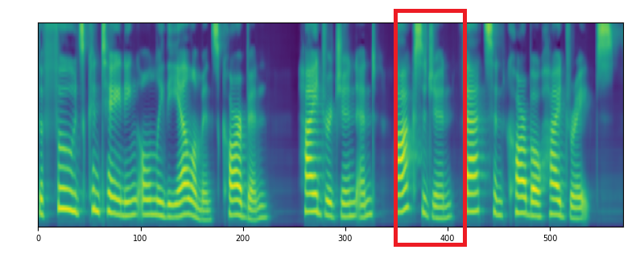
CM-TTS.
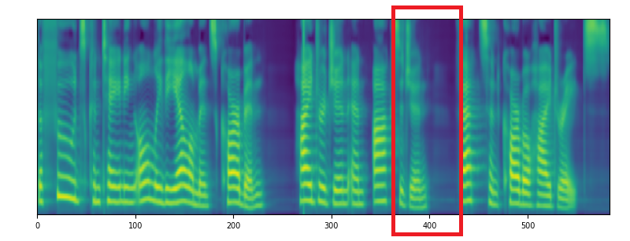
Ethics Statement
Given the ability of CM-TTS to synthesize speech while preserving the speaker's identity, potential risks of misuse, such as deceiving voice recognition systems or impersonating specific individuals, may arise. In our experiments, we operate under the assumption that users willingly agree to be the designated speaker for speech synthesis. In the event of the model's application to unknown speakers in real-world scenarios, it is imperative to establish a protocol ensuring explicit consent from speakers for the utilization of their voices. Additionally, implementing a synthetic speech detection model is recommended to mitigate the potential for misuse.